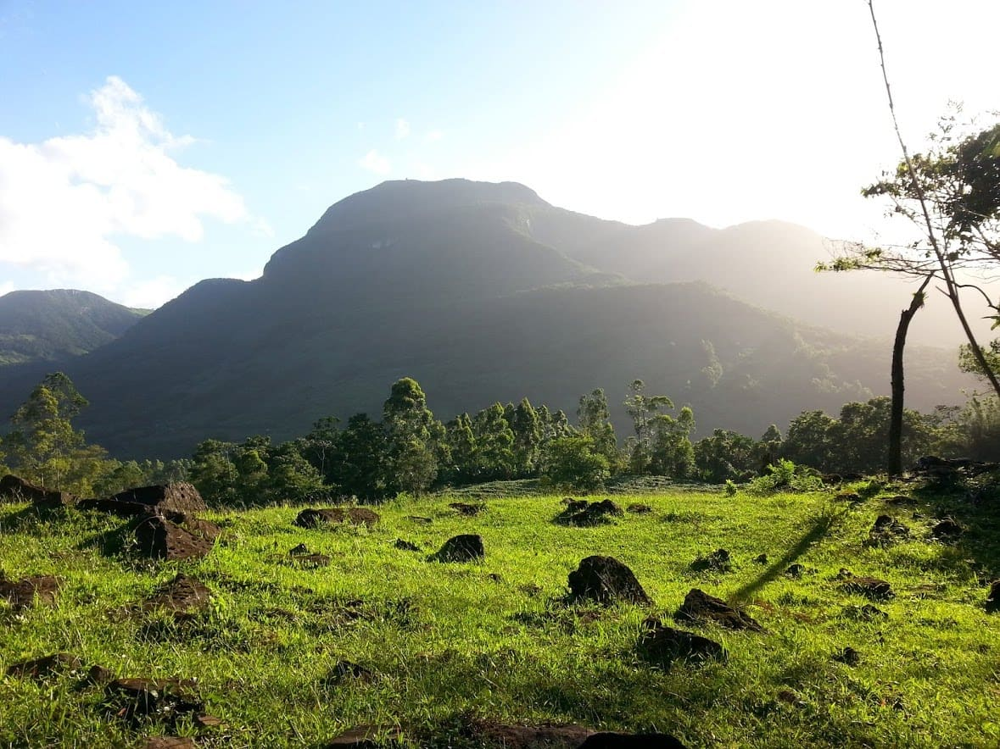
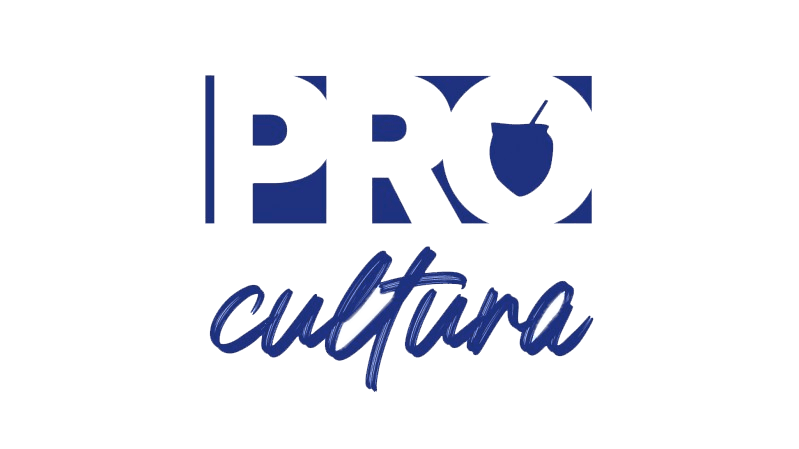
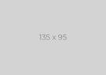

gerando impacto socioambiental positivo
O IPASG nasceu em 2025 em Mampituba/RS com o propósito de unir permacultura, educação prática, bioconstrução e tecnologias sociais para transformar comunidades.
O que fazemos
O IPASG atua como um agente de transformação socioambiental. Nosso trabalho é fundamentado na Permacultura, desenvolvendo soluções que cuidam da terra, cuidam das pessoas e garantem a partilha justa. Abaixo, nossas principais frentes de atuação:
Agroecologia
Design de sistemas produtivos sustentáveis, hortas comunitárias e promoção da segurança alimentar local.
Educação Ambiental
Oficinas, cursos e vivências práticas para reconectar crianças e adultos à conservação da natureza.
Bioconstrução
Tecnologias ecológicas para tratamento natural de resíduos e moradias de baixo impacto ambiental.
Assessoria
Apoio técnico a escolas, associações e comunidades para a implementação de projetos regenerativos.
Projetos em Destaque
Conheça algumas das iniciativas práticas e serviços que desenvolvemos aplicando nossas metodologias.
Próximos Eventos
Participe de nossas oficinas, mutirões e vivências práticas.
Parceiros & Patrocinadores
Organizações e parceiros que caminham conosco.


